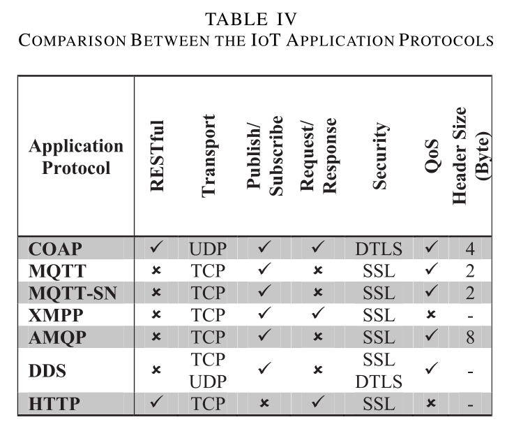
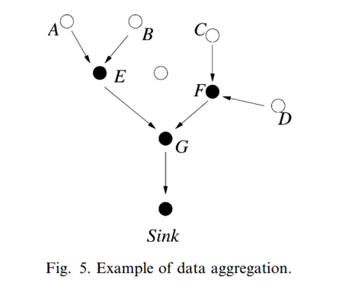

物联网&传感网 | 综述
综述类
[TOC]
无线传感器网络
摘要
-
传感器网络：集成了传感器 微机电系统和网络三大技术而形成
-
阐述了包括低功耗路由技术和介质访问控制方法等在内的热点研究问题
-
阐述了包括低功耗路由技术和介质访问控制方法等在内的热点研究问题
传感器网络的体系结构
-
节点组成：
-
传感器网络节点的组成不尽相同,但一般都由数据采集、数据处理、数据传输和电源这 4部分组成
-
处理器通常选用嵌入式 CPU
-
数据传输单元主要由低功耗短距离的无线通信模块组成
-
因为需要进行较复杂的任务调度与管理,系统需要一个微型化的操作系统
-
-
网络体系结构
-
节点以自组织形式构成网络,通过多跳中继方式将监测数据传到 sink 节点,最终借助长距离或临时建立的 sink 链路将整个区域内的数据传送到远程中心进行集中处理.
-
如果网络规模太大,可以采用聚类分层的管理模式
-
传感器网络的应用
- 主要表现在军事 环境 健康 家庭和其他商业领域.当然,在空间探索和灾难拯救等特殊的领域
- 在军事应用中,与独立的卫星和地面雷达系统相比,传感器网络的潜在优势表现在以下几个方面
- 分布节点中多角度和多方位信息的综合有效地提高了信噪比
- 传感器网络低成本、高冗余的设计原则为整个系统提供了较强的容错能力
- 传感器节点与探测目标的近距离接触大大消除了环境噪声对系统性能的影响.
- 传感器节点与探测目标的近距离接触大大消除了环境噪声对系统性能的影响.
- 多节点联合,形成覆盖面积较大的实时探测区域.
- 借助于个别具有移动能力的节点对网络拓扑结构的调整能力,可以有效地消除探测区域内的阴影和盲点.
传感器网络研究中的热点问题
- 传感器网络的研究大致经过了两个阶段
- 第 1 阶段主要偏重利用 MEMS 技术设计小型化的节点设备
- 第 2 阶段侧重于对网络本身问题的关注和研究
网络层
- 传感器网络中的路由协议分为平面型和层次型两种,但大都采用多跳形式在节点和易移动的 sink 节点之间建立连接
平面路由协议
- Flooding 泛洪
- 泛洪是一种传统的路由技术,不要求维护网络的拓扑结构,并进行路由计算,接收到消息的节点以广播形式转发分组.
- 消息的**“内爆”(implosion)和“重叠”(overlap)**是其固有的缺陷
- 为了克服这些缺陷,S.hedetniemi等人提出了 Gossiping 策略
- 节点随机选取一个相邻节点转发它接收到的分组,而不是采用广播形式.
- 这种方法避免了消息的“内爆”现象,但有可能增加端到端的传输延时
-
SPIN (sensor protocol for information via negotiation)
-
通过协商获取信息的传感器协议
-
以数据为中心的自适应路由协议,通过协商机制来解决泛洪算法中的“内爆”和“重叠”问题
-
传感器节点仅广播采集数据的描述信息,当有相应的请求时,才有目的地发送数据信息.
-
SPIN协议中有 3种类型的消息,即 ADV,REQ和 DATA
- 节点用 ADV宣布有数据发送
- 用 REQ请求希望接收数据
- 用 DATA封装数据.
-
-
SPIN 协议有 4种不同的形式:
- SPIN-PP.采用点到点的通信模式。
- 要发送数据的节点通过 ADV向它的相邻节点广播消息,感兴趣的节点通过 REQ发送请求,数据源向请求者发送数据.
- 接收到数据的节点再向它的相邻节点广播 ADV消息,如此重复
- SPIN-EC.在 SPIN-PP的基础上考虑了节点的功耗,只有能够顺利完成所有任务且能量不低于设定阈值的节点才可参与数据交换.
- SPIN-BC.设计了广播信道,使所有在有效半径内的节点可以同时完成数据交换.
- 为了防止产生重复的REQ请求,节点在听到 ADV消息以后,设定一个随机定时器来控制 REQ请求的发送,其他节点听到该请求,主动放弃请求权利.
- SPIN-RL.它是对 SPIN-BC的完善,主要考虑如何恢复无线链路引入的分组差错与丢失.
- 记录 ADV消息的相关状态,如果在确定时间间隔内接收不到请求数据,则发送重传请求,重传请求的次数有一定的限制.
- SPIN-PP.采用点到点的通信模式。
- SAR (sequential assignment routing) 有序分配路由
- 充分考虑了功耗 QoS和分组优先权等特殊要求
- 采用局部路径恢复和多路经备份策略,避免节点或链路失败时进行路由重计算需要的过量计算开销.
- 需要维护多个树结构,每个树以落在 sink节点有效传输半径内的节点为根向外生长,枝干的选择需满足一定 QoS要求并要有一定的能量储备.
-
定向扩散(directed diffusion)
-
节点用一组属性值来命名它所生成的数据
-
节点发出的查询业务也用属性的组合表示,逐级扩散,最终遍历全网,找到所有匹配的原始数据.
-
有一个称为**“梯度”**的变量与整个业务请求的扩散过程相联系,反映了网络中间节点对匹配请求条件的数据源的近似判断
- 节点用一组标量值表示它的选择,值越大意味着向该方向继续搜索获得匹配数据的可能性越大
- 最终将会在整个网络中为 sink节点的请求建立一个临时的“梯度”场,匹配数据可以沿“梯度”最大的方向中继回 sink节点.
-
层次路由协议
- LEACH (low energy adaptive clustering hierarchy) 低功耗自适应聚类路由
- 主要通过随机选择聚类首领,平均分担中继通信业务来实现
- LEACH定义了“轮”(round)的概念,一轮由初始化和稳定工作两个阶段组成.为了避免额外的处理开销,稳定态一般持续相对较长的时间.
- 在初始化阶段,聚类首领是通过下面的机制产生的：
- 传感器节点生成 0,1之间的随机数,如果大于阈值 T,则选该节点为聚类首领.T的计算方法为
- 其中 p为节点中成为聚类首领的百分数,r是当前的轮数
- 一旦聚类首领被选定,它们便主动向所有节点广播这一消息.依据接收信号的强度,节点选择它所要加入的组,并告知相应的聚类首领.
- 基于时分复用的方式,聚类首领为其中的每个成员分配通信时隙
- 在稳定工作阶段,节点持续采集监测数据,传与聚类首领,进行必要的融合处理之后,发送到 sink节点
- 持续一段时间以后,整个网络进入下一轮工作周期,重新选择聚类首领.
- TEEN (threshold sensitive energy efficient sensor network protocol)
- 阈值敏感节能传感器网络协议
- 依照应用模式的不同,通常可以简单地将无线自组织网络(包括传感器网络和 Ad-hoc网络)分为**主动(proactive)和响应(reactive)**两种类型.
- 主动型传感器网络持续监测周围的物质现象,并以恒定速率发送监测数据
- 响应型传感器网络只是在被观测变量发生突变时才传送数据
- 响应型传感器网络更适合应用在敏感时间的应用中
- 在 TEEN中定义了硬、软两个门限值,以确定是否需要发送监测数据.
- 当监测数据第一次超过设定的硬门限时,节点用它作为新的硬门限,并在接着到来的时隙内发送它.
- 在接下来的过程中,如果监测数据的变化幅度大于软门限界定的范围,则节点传送最新采集的数据,并将它设定为新的硬门限.
- 通过调节软门限值的大小,可以在监测精度和系统能耗之间取得合理的平衡.
- PEGAGIS (power-efficient gathering in sensor information system)
- 节点发送能量递减的测试信号,通过检测应答来确定离自己最近的相邻节点
- 多层聚类算法
- 工作在网络中的传感器节点处于不同的层,**所处层次越高,所覆盖面积越大.**起初,所有节点均在最低层,通过竞争获得提升高层的机会.
- 新的工作周期开始时,每一个节点都广播自己的状态信息,包括储备能量 所在层次和首领的 ID(如果有)等,然后进入等待状态以便相互了解信息,等待时间与所在层次成正比.
- 处在最低层的节点如果没有首领,等待状态结束后,立刻启动一个“晋升定时器”,定时时间与自身能量以及接收到同层其他节点广播消息的数目成反比,目的是为能量较高且在密集区的节点获得较多的提升机会.
- 一旦定时时间到,节点升入高层,将有发给自己广播消息的节点视为潜在的子节点,并广播自己新的状态信息
- 低层节点选择响应这些准首领的广播消息,最终确定惟一的通信关系.选择了首领的节点,自己的“晋升定时器”将停止工作,也就意味着本轮放弃了晋升机会.
链路层
-
链路层协议用于建立可靠的点到点或点到多点通信链路,主要由介质访问控制(MAC)组成
-
就实现机制而言,MAC协议分 3类:确定性分配、竞争占用和随机访问
- 前两者不是传感器网络的理想选择.因为 TDMA 固定时隙的发送模式功耗过大,为了节省功耗,空闲状态应关闭发射机;
- 竞争占用方案需要实时监测信道状态,也不是一种合理的选择;
- 随机介质访问模式比较适合于无线传感网络的节能要求.
- SMACS
- SMACS是分布式的 MAC协议,无须任何局部或全局主节点的调度便能让传感器节点发现相邻节点,并安排合理信道占用时间
- 在具体实现中,相邻节点的发现和信道的分配是一起完成的,因此,当节点听到它所有的相邻节点时,也就意味着已经建立相应的通信子网
- 在竞争信道资源时,带延时的随机唤醒机制有效地减小了能量的损耗.
- SMACS的缺点是**时隙分配方案不够严密,**属于不同子网的节点之间有可能永远得不到通信机会.
- 基于 CSMA的介质访问控制
- 传统的载波侦听/多路访问(CSMA)机制不适合传感器网络的原因有二
- 其一,持续侦听信道的过量功耗
- 其二,倾向支持独立的点到点通信业务,这样容易导致临近网关的节点获得更多的通信机会,而抑制多跳业务流量,造成不公平
- 为了弥补这些缺陷,Woo和 Culler从两个方面对传统的 CSMA进行了改进
- 采用固定时间间隔的周期性侦听方案节省功耗
- 设计自适应传输速率控制(adaptive transmission rate control,简称 ARC)策略,有针对性地抑制单跳通信业务量,为中继业务提供更多的服务机会,提高公平性.
- 传统的载波侦听/多路访问(CSMA)机制不适合传感器网络的原因有二
- TDMA/FDMA组合方案
- Sohrabi和 Pottie设计的传感器网络自组织 MAC 协议是一种时分复用和频分复用的混合方案
- 节点上维护着一个特殊的结构帧,类似于 TDMA 中的时隙分配表,节点据此调度它与相邻节点间的通信.
- FDMA技术提供的多信道,使多个节点之间可以同时通信,有效地避免了冲突.只是在业务量较小的传感器网络中
- 该组合协议的信道利用率较低,因为事先定义的信道和时隙分配方案限制了对空闲时隙的有效利用.
其他重要热点问题
系统节能策略
- 动态功率管理(dynamic power management,简称 DPM)
- 在多数传感器网络的应用中,监测事件具有很强的偶发性,节点上所有的工作单元没有必要时刻保持在正常的工作状态
- 处于沉寂状态,甚至完全关闭,必要时加以唤醒是一种有效的系统节能方案
- 传感器网络节点的主要功耗器件有处理器、内存、带 A/D 的传感器和无线收发单元.
- 动态电压调度(dynamic voltage scheduling,简称 DVS)、
- 由 C. Lm等人提出的动态电压调度策略的主要原理是基于负载状态动态调节供电电压来减小系统功耗
共性技术
- 时钟同步
- 传感器网络中的通信协议和应用,比如基于 TDMA 的 MAC 协议和敏感时间的监测任务等,要求节点间的时钟必须保持同步.
- J. Elson和 D. Estrin给出了一种简单实用的同步策略.其基本思想是,节点以自己的时钟记录事件,随后用第三方广播的基准时间加以校正,精度依赖于对这段间隔时间的测量.
- 定位机制与算法
- 传感器网络中的定位机制与算法包括两部分:节点自身定位和外部目标定位,前者是后者的基础
Internet of Things: A Survey on Enabling Technologies, Protocols, and Applications
物联网：关于实现技术、协议和应用的调查
IoT ARCHITECTURE
物联网架构
- 从提出的模型库来看，基本模型是由**应用层（Application）、网络层（Network）和感知层（Perception ）**组成的三层体系结构
- 接下来，我们简要讨论五层模型（不要与TCP/IP层混淆）
Objects Layer
-
The first layer, the Objects (devices) or perception layer, represents the physical sensors of the IoT that aim to collect and process information.
代表物联网的物理传感器，旨在收集和处理信息。
-
这一层包括传感器和执行器，以执行不同的功能
- 如查询位置、温度、重量、运动、振动、加速度
-
感知层需要使用**标准化的即插即用机制（ plug-and-play mechanisms ）**来配置异构对象
-
感知层通过安全通道将数据数字化并传输到对象抽象层（ Object Abstraction Layer）。
-
物联网创建的大数据在此层启动。
Object Abstraction Layer
-
Object Abstraction transfers data produced by the Objects layer to the Service Management layer through secure channels.
通过安全通道将对象层生成的数据传输到服务管理层。
-
数据可以通过各种技术传输，如RFID、3G、GSM、UMTS、WiFi、低功耗蓝牙、红外、ZigBee等
-
此外，云计算和数据管理流程等其他功能也在这一层处理
Service Management Layer
-
Service Management or Middleware (pairing) layer pairs a service with its requester based on addresses and names.
根据地址和名称将服务与其请求者配对
-
该层使物联网应用程序程序员能够在不考虑特定硬件平台的情况下处理异构对象
-
该层还处理接收到的数据，做出决策，并通过网络线协议提供所需的服务
Application Layer
- The application layer provides the services requested by customers.
- 这一层对于物联网的重要性在于，它能够提供高质量的智能服务来满足客户的需求。
- 应用层覆盖智能家居、智能建筑、交通、工业自动化和智能医疗等众多垂直市场（vertical markets）
Business Layer
- The business (management) layer manages the overall IoT
system activities and services. - 该层的职责是根据从应用层接收的数据构建业务模型、图表、流程图等
- 它还应设计、分析、实施、评估、监控和开发物联网系统相关要素，在这一层实现了对底层四层的监控和管理。
- 该层还将每个层的输出与预期输出进行比较，以增强服务并维护用户隐私
Remarks
-
The architectures that borrow their layers and concepts from network stacks (like the three-layer model) do not conform to real IoT environments
从网络堆栈借用其层和概念的架构（如三层模型）不符合真实的物联网环境
-
在五层模型中，应用层是终端用户与设备交互并查询感兴趣数据的接口。
- 它还提供了一个到业务层的接口，可以在其中生成高级分析和报告。
- 应用程序层中访问数据的控制机制也在此层处理。
- 由于其复杂和巨大的计算需求，该层托管在功能强大的设备上。
-
五层架构是物联网应用最适用的模型。
IoT ELEMENTS
Identification
标识
-
Identification is crucial for the IoT to name and match
services with their demand.标识对于物联网根据其需求命名和匹配服务至关重要。
-
物联网有多种识别方法，如电子产品代码（electronic product codes, EPC）和通用代码（ubiquitous codes, uCode）
-
寻址物联网对象对于区分对象ID及其地址至关重要
- 对象ID是指其名称，例如特定温度传感器的“T1”
- 对象地址是指其在通信网络中的地址。
-
此外，物联网对象的寻址方法包括IPv6和IPv4
- 6LoWPAN 提供了基于IPv6标头的压缩机制，使IPv6寻址适合于低功耗无线网络
-
区分对象的标识和地址是必要的，因为标识方法不是全局唯一的，所以寻址有助于唯一地标识对象。
- 此外，网络中的对象可能使用公共IP，而不是专用IP
-
**识别方法（ Identification methods）**用于为网络中的每个对象提供清晰的标识。
Sensing
传感；感觉；测知
-
The IoT sensing means gathering data from related objects within the network and sending it back to a data warehouse, database, or cloud.
物联网感知意味着从网络内的相关对象收集数据，并将其发送回数据仓库、数据库或云。
-
物联网传感器可以是智能传感器、执行器或可穿戴传感设备
-
集成了传感器和内置TCP/IP和安全功能的**单板计算机（Single Board Computers, SBC）**通常用于实现物联网产品
- 例如：Arduino、树莓派等
- 此类设备通常连接到中央管理门户，以提供客户所需的数据
Communication
-
The IoT communication technologies connect heterogeneous objects together to deliver specific smart services.
-
通常，物联网节点应在存在损耗和噪声通信链路的情况下使用低功率运行
- 物联网使用的通信协议示例包括Wi-Fi、Bluetooth、IEEE 802.15.4、Z-wave和LTE Advanced
- 一些特定的通信技术也在使用，如RFID、近场通信（Near Field Communication, NFC）和超宽带（ultra-wide bandwidth, UWB）
-
RFID（RFID标签和阅读器）是第一种用于实现M2M概念的技术
- **RFID标签（tag）**代表一个简单的芯片或标签，用于提供对象的标识
- RFID阅读器（reader）向标签发送查询信号，并接收来自标签的反射信号，然后将其传递给数据库
- 数据库连接到一个处理中心，以根据（10 cm至200 m）范围内的反射信号识别物体
- RFID标签可以是主动、被动或半被动的
- 有源标签由电池供电，而无源标签不需要电池。半无源/有源标签在需要时使用板电源
-
NFC协议在13.56 MHz的高频段工作，支持高达424 kbps的数据速率
- 在主动读卡器和被动标签或两个主动读卡员之间可以进行通信的情况下，适用范围可达10 cm
-
UWB通信技术旨在支持使用低能量和高带宽的低范围覆盖区域内的通信，其用于连接传感器的应用最近有所增加
-
Wi-Fi 使用无线电波在100米范围内的物体之间交换数据
- Wi-Fi允许智能设备在某些**点对点（ad hoc ）**配置中无需使用路由器即可进行通信和交换信息
-
蓝牙提供了一种通信技术，用于使用短波长无线电在短距离设备之间交换数据，以最小化功耗
-
**LTE（Long Term Evolution，长期演进）**最初是基于GSM/UMTS网络技术的移动电话之间高速数据传输的标准无线通信，它可以覆盖快速移动设备，并提供多播和广播服务。
Computation
-
Processing units (e.g., microcontrollers, microprocessors, SOCs, FPGAs) and software applications represent the “brain” and the computational ability of the IoT.
-
许多软件平台用于提供物联网功能。在这些平台中，操作系统至关重要，因为它们在设备的整个激活时间内运行。
-
有几种**实时操作系统（Real-Time Operating Systems , RTOS）**很适合开发基于RTOS的物联网应用程序
- 例如，Contiki RTOS已在物联网场景中广泛使用。TinyOS、LiteOS和Riot OS还提供专为物联网环境设计的轻量级操作系统。
-
**云平台（Cloud Platforms）**是物联网的另一个重要计算部分
- 这些平台为智能对象向云端发送数据、实时处理大数据以及最终用户从收集的大数据中提取的知识中受益提供了便利
Services
- 总体而言，物联网服务可分为四类：身份相关（Identity-related）服务、信息聚合（Information Aggregation）服务、协作感知（Collaborative-Aware）服务和普适（Ubiquitous）服务
- 身份相关服务是其他类型服务中使用的最基本和最重要的服务。每个需要将真实世界的对象带入虚拟世界的应用程序都必须识别这些对象
- 信息聚合服务收集并汇总需要处理并报告给物联网应用程序的原始感官测量
- 协作感知服务在信息聚合服务之上发挥作用，并使用获得的数据做出决策和相应的反应
- 普适服务旨在随时随地为任何需要它们的人提供协作感知服务。 所有物联网应用程序的最终目标是达到普适服务的水平。
- 大多数现有应用程序都提供身份相关、信息聚合和协作感知服务
- 智能医疗和智能电网属于信息聚合类别
- 智能家居、智能建筑、智能交通系统（intelligent transportation systems, ITS）和工业自动化更接近协作感知类别
Semantics
- Semantic(语义) in the IoT refers to the ability to extract knowledge smartly by different machines to provide the required services.
- Knowledge extraction includes discovering and using resources and modeling information.
- Also, it includes recognizing and analyzing data to make sense of the right decision to provide the exact service
- 语义通过向正确的资源发送需求来表示物联网的大脑
- 语义Web技术（Semantic Web technologies）支持这一需求，如资源描述框架（ Resource Description Framework, RDF）和Web本体语言（Web Ontology Language, OWL）。
- 2011年，**万维网联盟（ Web Ontology Language, W3C）建议采用高效XML交换（Efficient XML Interchange, EXI）**格式
- EXI在物联网环境中非常重要，它旨在为资源受限的环境优化XML应用程序
- 此外，它在不影响相关资源（如电池寿命、代码大小、处理能耗和内存大小）的情况下减少了带宽需求
- EXI将XML消息转换为二进制，以减少所需的带宽并最小化所需的存储大小
IoT COMMON STANDARDS
- 本文将物联网协议分为四大类，即：应用协议（application protocols）、服务发现协议（service discovery protocols）、基础设施协议（infrastructure protocols）和其他有影响力的协议。
- 并非所有这些协议都必须捆绑在一起才能交付给定的物联网应用程序
- 根据物联网应用程序的性质，应用程序中可能不需要支持某些标准
Application Protocols
CoAP
-
受限应用程序协议（Constrained Application Protocol, CoAP）
-
**IETF Constrained RESTful Environments（CoRE）**工作组创建了CoAP，这是物联网应用的应用层协议
-
CoAP 基于HTTP功能之上的**表征状态转移（REpresentational State transfer, REST）**定义了一个web传输协议
- REST 可以看作是一种依赖于无状态客户机-服务器体系结构的可缓存连接协议
- 它在移动和社交网络应用程序中使用，并通过使用HTTP get、post、put和delete方法消除歧义
- REST 使客户端和服务器能够公开和使用web服务，如简单对象访问协议（Simple Object Access Protocol, SOAP），但以更简单的方式使用**统一资源标识符（Uniform Resource Identifiers, URI）**作为名词，使用HTTP get、post、put和delete方法作为动词
- REST 不需要XML来进行消息交换
-
与REST不同，CoAP默认绑定到UDP（而不是TCP），这使得它更适合物联网应用程序。此外，CoAP 修改了一些HTTP功能，以满足物联网要求，例如低功耗和存在损耗和噪声链路时的操作。
-
由于CoAP是基于REST设计的，因此在REST-CoAP代理中这两个协议之间的转换非常简单。
- CoAP 旨在使具有低功耗、计算和通信能力的小型设备能够利用REST 交互
-
-
CoAP可以分为两个子层，即消息传递（messaging）子层和请求/响应（request/response）子层
- 由于 UDP 没有内置的错误恢复机制，消息传递子层检测重复并使用指数退避在UDP传输层上提供可靠的通信
- 另一方面，请求/响应子层处理REST通信
-
CoAP使用四种类型的消息：可确认、不可确认、重置和确认（confirmable, non-confirmable, reset and acknowledgement）
-
CoAP的可靠性是通过可确认和不可确认消息的混合来实现的
-
它还采用了四种响应模式

- 当服务器需要等待特定时间才能回复客户端时，使用单独的响应（separate response）模式
- 在CoAP的不可确认响应（non-confirmable response）模式中，客户端发送数据而不等待ACK消息，而消息ID用于检测重复项。
-
当消息丢失或发生通信问题时，服务器端用RST消息进行响应。
- 与HTTP一样，CoAP使用GET、PUT、POST和DELETE等方法来实现创建、检索、更新和删除（CRUD）操作。
-
CoAP使用简单而小的格式来编码消息
- 每条消息的第一部分和固定部分是四个字节的头
- 然后可能会出现一个长度从零到八个字节的令牌(token)值。令牌值用于关联请求和响应。
- 选项和有效载荷是下一个可选字段。
- 典型的CoAP消息可以在10到20字节之间。
-
消息头字段含义如下：
-
Ver 是CoAP的版本
-
T 是Transaction的类型
-
OC 是Option计数
-
Code 表示请求方法（1–10）或响应代码（40–255）
- 例如，GET、POST、PUT和DELETE的代码分别是1、2、3和4
-
标头中的 Transaction ID 是用于匹配响应的唯一标识符
-
-
-
CoAP提供的一些重要功能包括
- 资源观察：按需订阅，使用发布/订阅机制监视感兴趣的资源
- 分块资源传输：能够在客户端和服务器之间交换收发器数据，而无需更新整个数据以减少通信开销
- 资源发现：服务器利用基于CoRE链接格式的web链接字段的已知URI路径为客户端提供资源发现
- 与HTTP交互：与多个设备通信的灵活性，因为通用REST体系结构使CoAP能够通过代理轻松与HTTP交互
- 安全性：CoAP是一种安全协议，因为它建立在**数据报传输层安全性（datagram transport layer security, DTLS）**之上，以保证交换消息的完整性和机密性
MQTT
-
消息队列遥测传输（Message Queue Telemetry Transport, MQTT）
-
MQTT is a messaging protocol that was introduced by Andy StanfordClark of IBM and Arlen Nipper of Arcom (now Eurotech) in 1999 and was standardized in 2013 at OASIS
-
MQTT 旨在将嵌入式设备和网络与应用程序和中间件连接起来。连接操作使用路由机制（一对一、一对多、多对多），并使MQTT成为物联网和M2M的最佳连接协议。
-
MQTT利用发布/订阅模式提供转换灵活性和实现的简单性
-
MQTT适用于使用不可靠或低带宽链路的资源受限设备。MQTT构建在TCP协议之上。它通过三个级别的QoS传递消息。
-
MQTT有两个主要规范：MQTT v3.1和MQTT-SN
- 后者是专门为传感器网络定义的，定义了MQTT的UDP映射，并添加了对索引主题名称的代理支持。
- 规范提供了三个元素：连接语义、路由和端点
-
-
MQTT仅由三个组件组成，即订阅者（subscriber）、发布者（publisher）和代理（broker）
- 感兴趣的设备可以注册为特定主题的订阅者，以便在发布者发布感兴趣的主题时由代理通知它
- 代理通过检查发布者和订阅者的授权来实现安全性
-
MQTT协议代表了物联网和M2M通信的理想消息传递协议
- 许多应用程序都使用MQTT，例如医疗保健、监控、能量计和Facebook通知
- 能够为脆弱和低带宽网络中的小型、廉价、低功耗和低内存设备提供路由
-
MQTT协议使用的消息格式如下图所示
- 消息的前两个字节是固定头
- 在此格式中，**消息类型（Message Type）**字段的值表示各种消息，包括CONNECT（1）、CONNACK（2）、PUBLISH（3）、SUBSCRIBE（8）等
- DUP 标志表示信息被复制，并且接收器可能以前收到过信息
- QoS Level 字段标识用于发布消息交付保证的三个QoS级别
- Retain 字段通知服务器保留最后收到的Publish消息，并将其作为第一条消息提交给新订阅者
- Remaining Length 字段显示消息的剩余长度，即可选部分的长度
- 消息的前两个字节是固定头
XMPP
-
可扩展消息和状态协议（Extensible Messaging and Presence Protocol, XMPP）
- XMPP is an IETF instant messaging (即时消息, IM) standard that is used for multi-party chatting, voice and video calling and telepresence
- XMPP was developed by the Jabber open source community to support an open, secure, spam free and decentralized messaging protocol.
-
XMPP允许用户通过在Internet上发送即时消息来相互通信，无论他们使用的是哪种操作系统
- XMPP allows IM applications to achieve authentication（身份验证）, access control（访问控制）, privacy measurement（隐私评估）, hop-by-hop（逐跳） and end-to-end encryption（到端加密）, and compatibility with other protocols.
-
XMPP协议的总体行为如下图所示，其中网关可以在外部消息传递网络之间架起桥梁
-
XMPP 的许多特性使其成为大多数IM应用程序的首选协议
- 它以**分散的方式（decentralized fashion）**在各种基于互联网的平台上运行
- XMPP是安全的，允许在核心协议之上添加新的应用程序
-
XMPP使用**XML节流（stream of XML stanzas）**将客户机连接到服务器
- XML节表示一段代码，该代码分为三个部分：消息（message）、**状态（presence）**和 iq（info/query）
- 消息节标识使用推送（push）方法检索数据的XMPP实体的源（发件人）和目标（收件人）地址、类型和ID
- 消息节用消息标题和内容填充主题和正文字段
- 状态节显示并通知客户授权的状态更新
- iq节对消息发送方和接收方进行配对
-
XMPP中使用XML的基于文本的通信会增加相当高的网络开销。这个问题的一个解决方案是使用EXI压缩XML流
AMQP
-
高级消息队列协议（Advanced Message Queuing Protocol, AMQP）
- AMQP 是**面向消息（message-oriented）**环境的物联网的开放标准应用层协议。
- 它支持通过消息传递保证原语进行可靠的通信，包括至少一次（at-most-once）、**至少一次（at-least-once）和精确一次（exactly once）**传递。
- AMQP需要可靠的传输协议（如TCP）来交换消息
-
通过定义线级协议（wire-level protocol），AMQP实现能够彼此互操作。通信由两个主要组件处理：交换和消息队列
- Exchange 用于将消息路由到适当的队列。交换和消息队列之间的路由基于一些预定义的规则和条件。
- 消息可以存储在消息队列中，然后发送给接收方。
- 除了这种点对点通信之外，AMQP还支持发布/订阅通信模型。
-
AMQP在其传输层之上定义了一个消息传递层。消息传递功能在此层中处理。
-
AMQP定义了两种类型的消息：发送方提供的裸消息（bare massages）和接收方看到的带注释的消息（annotated messages）。AMQP的消息格式如下图所示。
- 该格式的消息头传递交付（delivery）参数，包括耐久性（durability）、优先级（priority）、生存时间（time to live）、第一收单机构（first acquirer）和交付计数（delivery count）
-
传输层为消息传递层提供所需的扩展点。在这一层中，通信是**面向框架（frame-oriented）**的。AMQP帧的结构如图所示
- 前四个字节显示帧大小
- **DOFF（Data Offset, 数据偏移）**给出了帧体（body）在帧内的位置。
- **类型字段（Type field）**指示帧的格式和用途
- 例如，0x00用于表示帧是AMQP帧，或类型代码0x01表示SASL帧
DDS
-
数据分发服务（Data Distribution Service, DDS）
- Data Distribution Service (DDS) is a publish-subscribe protocol for real-time M2M communications that has been developed by Object Management Group (对象管理组，OMG)
- 与其他发布-订阅应用程序协议（如MQTT或AMQP）相比，DDS依赖于无代理体系结构（broker-less architecture），并使用**多播（multicasting）**为其应用程序带来卓越的服务质量（Quality of Service , QoS）和高可靠性
- DDS支持23个QoS策略，通过这些策略，开发人员可以解决各种通信标准，如安全性、紧急性、优先级、持久性、可靠性等
-
DDS体系结构定义了两层：数据中心发布订阅（Data-Centric Publish-Subscribe, DCPS）和数据本地重建层（Data-Local Reconstruction Layer, DLRL）
- DCPS负责将信息传递给订户
- DLRL是一个可选层，用作DCPS功能的接口。它有助于在分布式对象之间共享分布式数据。
-
DCPS层中的数据流涉及五个实体
-
传播数据的发布者（Publisher）
-
应用程序使用的DataWriter，用于与发布者就特定于给定类型的数据的值和更改进行交互
- DataWriter和Publisher的关联表示应用程序将在提供的上下文中发布指定的数据
-
接收已发布数据并将其交付给应用程序的订阅服务器（Subscriber）
-
DataReader that is employed by the Subscriber to access to the received data
-
由数据类型和名称标识的主题（Topic）
- Topics relate DataWriters to DataReaders.
-
-
DDS**域（domain）**是用于连接发布和订阅应用程序的虚拟环境，允许数据传输
Remarks
-
当数据包丢失率较低时，MQTT以比CoAP更低的延迟传递消息。
- 相反，当数据包丢失率较高时，CoAP性能优于MQTT。
- 对于较小的消息和低于25%的丢失率，CoAP在生成更少的额外流量方面优于MQTT。
- 另一项研究在智能手机应用程序环境中比较了这两种协议，表明CoAP的带宽使用量和往返时间小于MQTT。
-
由于其压缩的报头和较小的数据包大小，CoAP在传输时间和能量使用方面比HTPP更有效。
-
下表简要比较了常用物联网应用协议。表中的最后一列表示每个协议所需的最小标头大小

Service Discovery Protocols
物联网的高度可扩展性需要一种资源管理机制，能够以自我配置、高效和动态的方式注册和发现资源和服务。
mDNS
-
多播DNS（Multicast DNS, mDNS）
- A base service for some IoT applications like chatting is Name Resolution. mDNS is such a service that can perform the task of unicast DNS server
-
mDNS是嵌入式互联网设备的合适选择
- 不需要手动重新配置或额外管理来管理设备
- 能够在没有基础设施的情况下运行
- 如果基础设施发生故障，它能够继续工作
-
mDNS 通过向本地域中的所有节点发送IP多播消息来查询名称
- 通过此查询，客户端要求具有给定名称的设备进行回复。
- 当目标机器收到其名称时，它会多播包含其IP地址的响应消息。
- 网络中获取响应消息的所有设备都使用给定的名称和IP地址更新其本地缓存。
DNS-SD
-
DNS服务发现（DNS Service Discovery, DNS-SD）
-
The pairing function of required services by clients using mDNS is called DNS-based service discovery (DNS-SD).
客户端使用mDNS对所需服务的配对功能称为基于DNS的服务发现（DNS-SD）
-
使用此协议，客户端可以通过使用标准DNS消息在特定网络中发现一组所需的服务。下图提供了该协议如何工作的直观说明
- 与mDNS一样，DNS-SD是**零配置辅助工具（zero configuration）**的一部分，用于连接无需外部管理或配置的计算机
-
本质上，DNS-SD利用mDNS通过UDP将DNS数据包发送到特定的多播地址
-
-
处理服务发现有两个主要步骤：查找所需服务（如打印机）的主机（host）名，并使用mDNS将IP地址与其主机名配对
- 查找主机名很重要，因为IP地址可能会更改，而名称不会更改
- 配对功能将网络附件的详细信息（如IP和端口号）多播到每个相关主机
- 使用DNS-SD，网络中的**实例（instance）**名称可以尽可能长时间保持不变，以提高信任度和可靠性
- 物联网需要某种不依赖于配置机制的架构。在这种架构中，智能设备可以加入或离开平台，而不会影响整个系统的行为
- mDNS和DNS-SD可以为这一发展道路铺平道路
- 然而，这两个协议的主要缺点是需要缓存DNS条目，特别是在资源受限的设备上
Infrastructure Protocols
PRL
-
低功耗有损网络路由协议（Routing Protocol for Low Power and Lossy Networks, RPL）
-
The IETF routing over low-power and lossy links (低功耗损耗链路路由，ROLL) working group standardized a link-independent routing protocol based on IPv6 for resource-constrained nodes called RPL
IETF低功耗损耗链路路由（ROLL）工作组为资源受限节点标准化了一种基于IPv6的链路独立路由协议，称为RPL
-
创建RPL是为了通过在有损链路上构建**健壮的拓扑（robust topology）**来支持最小的路由需求
-
此路由协议支持简单和复杂的流量模型，如多点对点、点对多点和点对点
-
-
**面向目标的有向无环图（Destination Oriented Directed Acyclic Graph, DODAG）**表示RPL的核心，它显示了节点的路由图。如图所示,DODAG是指具有单个根的有向无环图
- DODAG中的每个节点都知道其父节点，但它们没有相关子节点的信息
- RPL为每个节点保留至少一条到根节点和首选父节点（preferred parent）的路径，以寻求更快的路径来提高性能
-
为了维护路由拓扑并保持路由信息的更新，RPL使用四种类型的控制消息。
- 最重要的消息是 DODAG Information Object（DIO），它用于保持节点的当前等级（level），根据某些特定指标确定每个节点到根的距离，并选择首选父路径。
- 另一种消息类型是目标播发对象（Destination Advertisement Object, DAO）。RPL使用DAO消息提供上行通信量和下行通信量支持，通过DAO消息将目标信息单播到选定的父节点。
- 第三种消息是DODAG信息请求（DODAG Information Solicitation, DIS），节点使用它从可到达的相邻节点获取DIO消息
- 最后一种消息类型是DAO确认（DAO Acknowledgment, DAO-ACk），它是对DAO消息的响应，由DAO接收方节点（如DAO父节点或DODAG根节点）发送
-
当根节点（构成DODAG的唯一节点）开始使用DIO消息向所有低功耗有损网络（Low-power Lossy Network, LLN）级别发送其位置时，开始形成DODAG
- 在每一级，接收方路由器为每个节点注册父路径和参与路径。他们反过来传播他们的DIO信息，整个DODAG逐渐建立起来。
- 当构建DODAG时，路由器获得的首选父节点将作为通向根节点的默认路径（向上路由）。根节点也可以将其他路由器的DIO获得的目的前缀存储在其DIO消息中，以具有向上路由
- 为了支持向下路由，路由器应该通过单播通过父节点向根节点发送和传播DAO消息。这些消息标识路由前缀的对应节点以及交叉路由。
-
RPL路由器在两种操作模式（modes of operation, MOP）之一下工作：非存储（Non-Storing）模式或存储（Storing）模式。
- 在非存储模式下，RPL根据IP源路由将消息路由到较低级别
- 在存储模式下，向下路由基于目标IPv6地址
6LowPAN
-
许多物联网通信可能依赖的**低功率无线个人局域网（Low power Wireless Personal Area Networks, WPAN）**具有一些不同于以前链路层技术的特殊特性，如有限的数据包大小（例如，IEEE 802.15.4的最大127字节）、各种地址长度和低带宽
- 因此，有必要建立一个适应层，使IPv6数据包符合IEEE 802.15.4规范。IETF 6LoWPAN工作组于2007年制定了这样的标准
- 6LoWPAN是IPv6在低功率WPAN上维护IPv6网络所需的映射服务规范
-
The standard provides
- header compression（报头压缩） to reduce the transmission overhead
- fragmentation（分段） to meet the IPv6 Maximum Transmission Unit (MTU) requirement
- forwarding to link-layer to support multi-hop delivery（多跳传输）
-
Datagrams enveloped by 6LoWPAN are followed by a combination of some headers.
由6LoWPAN封装的数据报后面是一些报头的组合
-
这些标头有四种类型，由两位标识：
-
00：NO 6LoWPAN Header
- 不符合6LoWPAN规范的数据包将被丢弃
-
01：Dispatch Header
- IPv6报头的压缩或多播通过指定Dispatch报头来执行
-
10：Mesh Addressing
- Mesh Addressing 报头标识那些必须转发到链路层的IEEE 802.15.4分组
-
11：Fragmentation
- 对于长度超过单个IEEE 802.15.4帧的数据报，应使用Fragmentation报头
-
-
-
6LoWPAN以这样一种方式消除了大量IPv6开销：在最佳情况下，可以通过单个IEEE 802.15.4 跳发送小IPv6数据报。它还可以将IPv6标头压缩为两个字节
IEEE 802.15.4
-
The IEEE 802.15.4 protocol was created to specify a sub-layer for Medium Access Control (MAC) and a physical layer (PHY) for low-rate wireless private area networks (LR-WPAN)
-
Due to its specifications such as low power consumption, low data rate, low cost, and high message throughput, it also is utilized by the IoT, M2M, and WSNs.
- It provides a reliable communication, operability on different platforms, and can handle a large number of nodes (about 65 k).
- It also provides a high level of security, encryption and authentication services.
- However, it does not provide QoS guarantees.
-
该协议是ZigBee协议的基础，因为它们都专注于在功率受限的设备上提供低数据速率服务，并且为WSN构建了完整的网络协议栈。
-
IEEE 802.15.4支持三个频带，并使用**直接序列扩频（direct sequence spread spectrum, DSSS）**方法
- 基于使用的频率信道，物理层以三种数据速率发送和接收数据：
- 2.4 GHz, 250 kbps
- 915 MHz, 40 kbps
- 868 MHz, 20 kbps
- 较高的频率和较宽的频带提供高吞吐量和低延迟，而较低的频率提供更好的灵敏度并覆盖更大的距离
- 为了减少潜在的冲突，IEEE 802.15.4 MAC使用CSMA/CA协议
- 基于使用的频率信道，物理层以三种数据速率发送和接收数据：
-
IEEE 802.15.4标准支持两种类型的网络节点：全功能设备和精简功能设备
-
**全功能设备（full function device, FFD）**可以用作个人区域网络（personal area network, PAN）协调器（coordinator）或仅用作普通节点
-
协调器负责网络的创建、控制和维护。
-
FFD可以在其存储器中存储路由表并实现完整的MAC，它们还可以使用任何可用拓扑与任何其他设备进行通信。

-
-
**简化功能设备（reduced function devices, RFD）**是资源受限的非常简单的节点。它们只能与协调器通信，并且仅限于星形拓扑。
-
-
形成IEEE 802.15.4网络的标准拓扑是星形、对等（网格）和簇树（cluster-tree）（见图20）
- 星形拓扑至少包含一个FFD和一些RFD。作为PAN协调器的FFD应该位于拓扑的中心，其目标是管理和控制网络中的所有其他节点。
- 对等拓扑包含PAN协调器，并且其他节点在同一网络中彼此通信。
- 集群树拓扑是对等拓扑的特例，由PAN协调器、集群头和普通节点组成。
Bluetooth Low Energy
- Bluetooth Low-Energy (BLE) or Bluetooth Smart uses a short range radio with a minimal amount of power to operate for a longer time (even for years) compared to its previous versions.
- 它的覆盖范围（约100米）是传统蓝牙的10倍，而延迟时间则短15倍
- BLE可以通过0.01mW至10mW之间的传输功率来操作
- 与ZigBee相比，BLE在能耗和每传输比特的传输能量比方面更高效
- 具有这些特点，BLE是物联网应用的理想候选
- BLE的网络堆栈如下
- 在BLE的堆栈的最低层有一个物理（Physical, PHY）层，用于传输和接收比特。
- 在物理层之上的链路（Link）层提供的服务包括介质访问、连接建立、错误控制和流量控制。
- **逻辑链路控制和适配协议（Logical Link Control and Adaptation Protocol, L2CAP）**为数据信道提供多路复用、较大数据包的分段和重组
- 另一个上层是通用属性协议（Generic Attribute protocol, GATT），它提供了传感器的有效数据收集，以及通用访问配置文件（Generic Access Profile, GAP），它允许应用程序在不同模式下进行配置和操作，如广告或扫描，以及连接启动和管理
- BLE允许设备在星形拓扑中作为主机或从机运行
- 对于发现机制，从机通过一个或多个专用广告信道发送广。为了被发现为从属通道，这些通道由主通道扫描。
- 除了两台设备交换数据时，其余时间都处于睡眠模式。
EPCglobal
-
电子产品代码（Electronic Product Code, EPC）是存储在RFID标签上的唯一标识号，基本上用于供应链管理，以标识物品。
- EPCglobal作为负责EPC开发的原始组织，管理EPC和RFID技术和标准。
- 底层架构使用基于互联网的RFID技术以及廉价的RFID标签和阅读器来共享产品信息
- 由于其开放性、可扩展性、互操作性和可靠性超出了对主要物联网需求（如对象ID和服务发现）的支持，该体系结构被认为是物联网未来的一项有前途的技术
-
EPC分为四种类型：96位、64位（I）、64位和64位（III）
- 所有类型的64位EPC支持大约16000家具有独特身份的公司，涵盖100万至900万种产品，每种类型的序列号为3300万。
- 96位类型支持大约2.68亿家拥有独特身份的公司，1600万种产品，每种产品有680亿个序列号。
-
RFID系统可分为两个主要部件：无线电信号转发器（标签, tag）和标签阅读器（reader）
- 标签由两部分组成：一个存储物体唯一身份的芯片和一个允许芯片使用无线电波与标签阅读器通信的天线
- 标签读取器产生射频场以通过标签的反射无线电波识别物体
- RFID的工作原理是使用无线电波将标签的编号发送到标签阅读器，如图21所示
- 之后，阅读器将该号码传递给一个称为对象命名服务（Object-Naming Services, ONS）的特定计算机应用程序
- ONS从数据库中查找标签的详细信息，例如标签的制造时间和地点
-
EPCglobal Network can be divided into five components: EPC, ID system, EPC Middleware, Discovery Services, and EPC Information Services. EPC as a unique number to objects, consists of four parts as seen in Fig. 22
EPCglobal Network可分为五个组件：EPC、ID系统、EPC中间件、发现服务和EPC信息服务。EPC作为对象的唯一编号，由四部分组成
- ID系统通过中间件使用EPC读取器将EPC身份链接到数据库。
- 发现服务是EPCglobal使用ONS通过标签查找所需数据的机制。
-
第二代EPC标签（称为Gen 2标签）于2006年年中推出，旨在在全球覆盖各种公司产品
-
与第一代标签（称为无源RFID, passive RFID）相比，第二代标签为客户提供了更好的服务
- 其特点包括：异构对象下的互操作性、满足所有要求的高性能、高可靠性以及廉价的标签和阅读器。表五总结了EPC标签的不同类别。
-
下表总结了EPC标签的不同类别
LTE-A
Long Term Evolution—Advanced
- LTE-A包含一套适合机器类型通信（Machine-Type Communications, MTC）和物联网基础设施的蜂窝通信协议（cellular communication protocols），特别是对于基础设施预计长期耐久性的智能城市。此外，它在服务成本和可扩展性方面优于其他蜂窝解决方案。
- 在物理层，LTE-A使用正交频分多址（orthogonal frequency division multiple access, OFDMA），通过OFDMA将信道带宽划分为称为物理资源块（physical resource blocks, PRB）的较小频带。
- LTE-A还采用**多分量载波（multiple-component-carrier, CC）**扩频技术，其允许具有多达五个20MHz频带。
- LTE-A网络的架构依赖于两个基本部分
- 第一个是核心网络（Core Network, CN），它控制移动设备并处理IP数据包流
- 另一部分是无线接入网络（Radio Access Network, RAN），它处理无线通信和无线接入，并建立用户平面和控制平面协议
- RAN主要由通过X2接口彼此连接的基站（也称为演进节点B, evolved NodeBs）组成
- RAN和CN通过S1接口连接。移动或MTC设备可以直接或通过MTC网关（MTC gateway, MTCG）连接到基站。它们还可以与其他MTC设备直接通信
- 然而，该协议有其挑战，例如当大量设备接入网络时，网络拥塞严重。另一个挑战是，当MTC设备试图通过eNB或MTCG选择接入网络时，QoS可能会受到损害
Z-Wave
- Z-Wave作为家庭自动化网络（Home Automation Networks, HAN）的低功耗无线通信协议，已广泛应用于智能家居和小型商业领域的远程控制应用中
- 该协议最初由ZenSys（现为Sigma Designs）开发，后来由Z-Wave联盟采用和改进
- Z-Wave覆盖约30米的点对点通信，专为需要微小数据传输的应用而设计，如灯光控制、家用电器控制、智能能源和暖通空调、门禁控制、可穿戴医疗保健控制和火灾探测
- 其MAC层受益于冲突避免机制。在该协议中，通过可选的ACK消息可以进行可靠的传输。
- 在其架构中，有控制器和从节点
- 控制器通过向从属设备发送命令来管理从属设备
- 出于路由目的，控制器保留整个网络拓扑的表。此协议中的路由由源路由方法执行，其中控制器提交包内的路径。
Remarks
-
研究人员对低功率和有损网络的RPL进行了评估，其中发现了几个问题，包括：
- 根据规范，存储和非存储模式中的操作模式不兼容
- 将快速网络建立和有限通信延迟确定为其有效性，而高开销是一个潜在的缺陷
- 由于缺乏链路质量的完整知识，RPL存在一些不可靠性问题
-
使用点对点通信测试台分析无线传感器网络中6LoWPAN的性能表明：
- 当ICMP有效载荷的大小增加时，往返延迟增加。
- 6LoWPAN网关还存在一些其他问题，例如数据包丢失率高、易受干扰。
-
为了减少EPC Gen-2协议中的冲突次数并改进标签识别过程，研究人员建议使用码分多址（code division multiple access, CDMA）技术，而不是动态帧时隙ALOHA（dynamic framed slotted ALOHA）技术
- 使用查询的平均数和识别系统中所有标签所需的传输比特总数作为测量因子。结果表明，使用CDMA技术的标签识别查询的预期数量低于EPC Gen-2协议。
- 原因是在这种情况下，CDMA技术减少了冲突次数，从而减少了查询次数。
- 但当比较传输比特数和识别系统中所有标签所需的时间时，EPC Gen-2协议的性能优于CDMA技术。
- 使用查询的平均数和识别系统中所有标签所需的传输比特总数作为测量因子。结果表明，使用CDMA技术的标签识别查询的预期数量低于EPC Gen-2协议。
-
Z-Wave显示出了可接受的性能，尽管它比ZigBee更昂贵，但它已被广泛应用于智能家居应用中。
- 此外，Z-Wave应用程序可以从该协议的灵活性和安全性中受益。据报道，其整体性能优于ZigBee的性能。
-
下表总结了物联网中使用的PHY层协议的主要特征
Other Influential Protocols
Beyond the standards and protocols that define an operational framework for IoT applications, there are some other considerations like security and interoperability that should be taken into account.
除了定义物联网应用程序操作框架的标准和协议之外，还应考虑其他一些考虑因素，如安全性和互操作性。
Security
- 物联网的新功能和机制不能通过互联网上使用的传统安全协议来保护。
- 互联网上的安全协议被设计为在标准的非资源受限设备（如台式机和笔记本电脑）上工作。
- 此外，支持物联网的新协议和体系结构的出现指出了新的安全问题，从应用程序到基础设施层，物联网的所有层都应考虑到这一问题，包括保护资源受限设备内的数据。
- 对于数据的安全存储，Codo 是为Contiki OS设计的文件系统级安全解决方案。通过缓存数据进行批量加密和解密，Codo可以提高安全操作的性能。
- 在链路层，IEEE 802.15.4安全协议提供了保护两个相邻设备之间通信的机制
- 在网络层，IPSec 是IPv6网络层的强制安全协议
- 考虑到6LoWPAN网络中的多跳特性和大消息大小，IPsec比IEEE 802.15.4安全性提供了更高效的通信
- 由于IPSec在网络层工作，它可以服务于任何上层，包括所有基于TCP或UDP的应用协议
- 另一方面，传输层安全（Transport Layer Security, TLS）是一种众所周知的安全协议，用于为TCP通信提供安全传输层。保护UDP通信的对应版本称为数据报TLS（Datagram TLS, DTLS）。
- 在应用层，安全解决方案不多，大多数都依赖于传输层的安全协议，即TLS或DTLS
- 支持加密和身份验证的此类解决方案的一些示例是 EventGuard 和 QUIP。 因此，应用程序协议有自己的安全考虑和方法。
- 大多数MQTT安全解决方案似乎都是特定于项目的，或者只是利用TLS/SSL协议。OASIS MQTT安全小组委员会正在制定一个标准，使用MQTT网络安全框架来保护MQTT消息传递。
- XMPP使用TLS协议来保护其流。它还使用简单身份验证和安全层（Simple Authentication and Security Layer, SASL）协议的特定配置文件对流进行身份验证。
- AMQP还使用TLS会话以及SASL协商来保护底层通信。
- 除了物联网通信的加密和认证服务之外，6LoWPAN网络内部和互联网可能存在其他一些易受无线攻击的漏洞。在这种情况下，需要入侵检测系统（Intrusion Detection Systems, IDS）。
Interoperability (IEEE 1905.1)
物联网环境中的各种设备依赖于不同的网络技术。因此，需要对底层技术进行互操作（interoperation）。
-
IEEE 1905.1标准是为融合数字家庭网络和异构技术而设计的。
-
它提供了一个抽象层，隐藏了媒体访问控制拓扑的多样性，如图23所示，同时不需要改变底层。
-
该协议提供了通用家庭网络技术的接口，使得数据链路和物理层协议（包括电力线上的IEEE 1901、各种RF频带上的WiFi 802.11、双绞线或光纤电缆上的以太网和同轴电缆上的MoCA 1.1）的组合可以彼此共存
-
-
虽然上述标准有助于物联网朝着提高生活质量的方向前进一步，但物联网设备和技术的环境影响、物联网系统的大规模和绿色部署等其他问题仍有待解决
QOS CRITERIA, IoT CHALLENGES AND FUTURE DIRECTIONS
-
Examples of key challenges include availability, reliability, mobility, performance, scalability, interoperability, security, management, and trust.
关键挑战包括可用性、可靠性、移动性、性能、可扩展性、互操作性、安全性、管理和信任
- Availability（可用性） of the IoT must be realized in the hardware and software levels to provide anywhere and anytime services for customers.
- 软件可用性是指物联网应用程序同时为不同地点的每个人提供服务的能力
- 硬件可用性是指始终存在与物联网功能和协议兼容的设备
- 实现物联网服务高可用性的一个解决方案是为关键设备和服务提供冗余（redundancy）
- Reliability（可靠性） refers to the proper working of the system based on its specification
- 可靠性旨在提高物联网服务交付的成功率
- 它与可用性有着密切的关系，因为通过可靠性，我们保证信息和服务的可用性
- 为了实现可靠的信息分发，通信网络必须具有故障恢复能力
- 可靠性必须在所有物联网层的软件和硬件中实现
- Mobility（移动性） is another challenge for the IoT implementations because most of the services are expected to be delivered to mobile users
- 在移动中不断将用户与其期望的服务连接起来是物联网的重要前提。当这些设备从一个网关转移到另一个网关时，可能会发生移动设备的服务中断
- Evaluating the performance（性能） of IoT services is a big challenge since it depends on the performance of many components as well as the performance of the underlying technologies.
- 许多指标可用于评估物联网的性能，包括处理速度、通信速度、设备形状和成本
- Managing（管理） IoT devices and applications can be an effective factor for growing the IoT deployments
- 轻量级M2M (Light-weight M2M, LWM2M)是由开放移动联盟开发的一种标准，用于在M2M设备和M2M服务器之间提供接口，为各种设备的管理构建一个应用程序不可知的方案。它旨在为M2M应用程序提供机器对机器设备、服务和应用程序的远程管理功能。
- The scalability（可扩展性） of the IoT refers to the ability to add new devices, services and functions for customers without negatively affecting the quality of existing services.
- Interoperability（互操作性） should be considered by both application developers and IoT device manufactures to ensure the delivery of services for all customers regardless of the specifications of the hardware platform that they use.
- 物联网程序员应该构建他们的应用程序，允许添加新功能，而不会造成问题或失去功能，同时保持与不同通信技术的集成。
- 除了各种各样的协议，不同各方对同一标准的不同解释也对互操作性提出了挑战。
-
Security（安全性） presents a significant challenge for the IoT implementations due to the lack of common standard and architecture for the IoT security.
-
One open problem in IoT security that has not been considered in the standards is the distribution of the keys amongst devices
标准中没有考虑到的物联网安全的一个开放问题是设备之间的密钥分配
-
-
On the other hand, privacy（隐私） issues and profile access operations between IoT devices without interferences are extremely critical.
-
另一个新兴的物联网研究方向是估计智能对象的网络位置，以实现新的位置和上下文组件服务。
- 目前的位置估计方法都是基于IP的。然而，命名数据网络(Named Data Networking, NDN)是未来互联网命名基础设施的候选者之一
BIG DATA ANALYTICS, CLOUD AND FOG COMPUTING IN SUPPORT OF THE IOT
- 将人类、动物、植物、装有传感器的智能手机、个人电脑等大量物理对象连接到互联网上，就产生了所谓的“大数据”
- 大数据需要智能高效的存储。显然，连接设备需要存储、处理和检索数据的机制。
- 但是，大数据是如此巨大，以至于它超过了常用硬件环境和软件工具在可接受的时间段内捕获、管理和处理它们的能力
- 美国国家标准与技术协会(NIST)将云计算的新兴和发展技术定义为对共享可配置计算源(如网络、服务器、仓库、应用程序和服务)的按需网络的访问模型。
- 物联网使用了大量的嵌入式设备，如产生大数据的传感器和执行器，而这些大数据又需要复杂的计算来提取知识。
- 因此，云的存储和计算资源是物联网存储和处理大数据的最佳选择。
Big Data Analytics in Support of the IoT
- The amount of IoT data generally is too huge to be fed and processed by the available tools.
- In support of the IoT, these platforms should work in real-time to serve the users efficiently.
- 在资源方面，除了数据中心强大的服务器之外，我们身边的许多智能设备都提供了计算能力，可以用来并行执行物联网数据分析任务。
- 物联网需要的不是提供特定应用的分析，而是一个通用的大数据分析平台，可以作为服务提供给物联网应用。这样的分析服务不应该对整个物联网生态系统造成相当大的开销。
- 最近的一项研究提出了这样一种物联网大数据分析服务，称为 TSaaaS，使用时间序列数据分析对收集的大量传感器数据进行模式挖掘
- 他们的分析服务依赖于时间序列数据库服务，可以通过一组RESTful接口访问。
- 评估表明，TSaaaS可以比现有系统更快地执行模式搜索。
- 物联网大数据的一个可行解决方案是只跟踪感兴趣的数据。
- 现有的方法可以在这一领域提供帮助，如主成分分析(PCA)、模式约简、降维、特征选择和分布式计算方法
Cloud Computing for the IoT
- Cloud computing (CC) offers a new management mechanism for big data that enables the processing of data and the extraction of valuable knowledge from it.
- Employing CC for the IoT is not an easy task due to the following challenges:
- 同步（Synchronization）：不同云供应商之间的同步对提供实时服务提出了挑战，因为服务构建在各种云平台之上。
- 标准化（Standardization）：CC标准化也为基于物联网云的服务提出了一个重大挑战，因为必须与各种供应商互操作。
- 平衡（Balancing）：由于基础设施的差异，在一般云服务环境和物联网需求之间实现平衡是另一个挑战。
- 可靠性（Reliability）：由于物联网设备和云平台之间的安全机制不同，基于物联网云的服务的安全提出了另一个挑战。
- 管理（Management）：CC和物联网系统的管理也是一个具有挑战性的因素，因为两者拥有不同的资源和组件。
- 增强（Enhancement）：验证物联网基于云的服务是必要的，以确保提供满足客户期望的良好服务。
- 物联网可以利用众多具有不同能力和优势的云平台，如ThingWorx、OpenIoT、谷歌cloud、Amazon、GENI等。
- Xively(前身为cosmm和Pachube)是首批物联网应用托管服务提供商之一，允许传感器数据在web上可用。
- Xively的目标是将设备实时安全地连接到应用程序。Xively为物联网应用开发者和服务提供商提供平台即服务(PaaS)解决方案。
- 它能够通过现成的库(如ARM mbed, Electric Imp和iOS/OSX)将设备与平台集成，并促进通过HTTP(S)、Sockets/ Websocket或MQTT进行通信
Fog Computing in Support of the IoT
-
Fog Computing (a.k.a. cloudlets or edge computing) can act as a bridge between smart devices and large-scale cloud computing and storage services.
- Through fog computing, it is possible to extend cloud computing services to the edge devices of the network.
- Because of their proximity to the end-users compared to the cloud data-centers, fog computing has the potential to offer services that deliver better delay performance.
- typically there is a significant difference in scale between the fog and the cloud such that the cloud has massive computational, storage and communications capabilities compared to the fog
-
移动网络运营商是雾计算的潜在提供商，因为他们可以通过在其服务网络甚至手机发射塔上提供服务，向企业业务提供IaaS、PaaS或SaaS模式之一的雾服务
-
雾计算可以作为物联网设计师的最佳选择，具有以下特点：
- 位置（location）：雾资源位于智能对象和云数据中心之间；从而提供更好的延迟性能。
- 分布（Distribution）：由于与云相比，雾计算基于存储、处理和通信能力有限的“微型”中心，因此可以将许多此类“微型”数据中心部署在离最终用户更近的地方，因为与云数据中心相比，它们的成本通常很小。
- 可扩展性（Scalability）：雾允许物联网系统更具可扩展性，从而随着最终用户数量的增加，部署的“微型”雾中心的数量可以增加，以应对不断增加的负载。
- 云无法实现这样的增长，因为新数据中心的部署成本过高。
- 设备密度（Density of devices）：雾有助于提供弹性和可复制的服务。
- 移动性支持（Mobility support）：雾资源就像一个**“移动”云**，因为它离终端用户很近。
- 实时（Real-time）：雾有可能为实时交互服务提供更好的性能。
- 标准化（Standardization）：雾资源可以与各种云提供互操作。
- 实时分析（On the fly analysis）：雾资源可以执行数据聚合，将部分处理后的数据（而不是原始数据）发送到云数据中心进行进一步处理。
-
因此，雾计算有可能提高物联网应用程序的整体性能，因为它试图执行由本地资源内的云提供的部分高级服务。
- 云平台的一个重要方面是与不同应用程序协议交互的能力。云平台可能有使用特定应用协议的不同客户。
THE NEED FOR BETTER HORIZONTAL INTEGRA TION BETWEEN APPLICA TION LAY E R PROTOCOLS
-
IoT devices can be classified into two major categories; namely: resource-constrained and resource-rich devices.
资源受限和资源丰富的设备。
- 将资源丰富的设备定义为具有支持TCP/IP协议套件的硬件和软件能力的设备。
- 在支持TCP/IP协议套件的设备上，物联网应用程序是在各种应用程序级协议和框架之上实现的，包括REST、CoAP、MQTT、MQTT-N、AMQP等
- 没有支持TCP/IP所需资源的设备无法轻松与支持TCP/IP套件的资源丰富的设备进行互操作。
- 用于在资源受限和资源丰富的设备内部和之间进行通信的协议之间的这种碎片化预计在不久的将来不会改变。
- 将资源丰富的设备定义为具有支持TCP/IP协议套件的硬件和软件能力的设备。
-
物联网设备之间的互操作前景黯淡，需要一个协议网关，允许这些不同技术之间更好的横向集成。
-
对新的智能物联网网关需求的内容有以下三个主要观察
- 程序员应该始终处于控制之中，他们应该具有控制有线协议的灵活性。
- 物联网设备可能受到资源限制，使用应用程序无关的消息传递会导致不必要的数据包交换。
- 智能网关应允许程序员根据需要控制有线协议流量，以根据给定应用程序的特定需求优化性能。
- 资源受限的设备不应被视为二等公民。智能网关应允许资源丰富和资源受限设备之间的真正互操作性。
- 智能网关应该是机会主义的，在物联网协议之间的市场分割导致的黯淡前景中创造新的机会。
- 程序员应该始终处于控制之中，他们应该具有控制有线协议的灵活性。
-
基于上述观察结果，我们认为需要一种智能物联网网关，该网关提供“智能”服务，可通过程序员编写的基于规则的语言进行深度可编程。
- 这里应该强调的是，我们提出的通过基于规则的语言对物联网网关进行更深入的可编程性的建议与当前的互操作性和管理标准化工作并不冲突。
- 该图说明了需要基于当前技术安装在资源受限设备上的协议栈，而不是使用智能网关的资源受限设备。
- 该图还详细说明了数据包的流顺序（d1…d12，然后通过网关的基于规则的数据流逻辑，最后是d13…d22）
- 同时说明管理包的流序列（m1…m12，然后通过基于规则的网关管理逻辑，最后m13…m22）。
- 规则的逻辑应用于接收到的数据和管理数据包（即图26中的d12和m12），以生成相应的数据和数据包（如图26中d13和m13）。
-
在物联网环境中引入网关实体也将有机会利用网关及其深度可编程性进行物联网元件的本地化自主管理，而无需人工干预。
- 在实际部署场景中，物联网节点可以部署数千甚至数百万，以支持单个应用程序。因此，必须具备自我管理故障、配置、会计、性能和安全（FCAPS）能力。
-
为了为协议转换提供高效且最适合的解决方案，我们认为需要在协议转换器内部建立一种协议友好机制，以提高转换速度。
-
该机制的关键点是不同应用程序协议的可选头中携带的数据的名称值索引表。
- 当数据包到达网关时，协议转换器检查可选的报头。如果它在那里找到了一个可接受的索引表，那么它会立即从有效负载中获取数据，并形成一个以目标协议为目标的数据包。
-
下图展示了（a）应用协议的可选标头、索引表和（b）网关内部的转换机制
- 由于索引表存储为可选标头，因此应用程序协议可能不使用索引表。在这种情况下，转换以传统形式进行，因此需要更长的时间。
-
APPLICA TION AND SERVICE USE-CASES
-
Application Use-Cases
- Nursing Home Patient Monitoring System
- Monitoring and Mitigation of Eating Disorders
- In-Door Navigation System for the Blind and Visually Impaired People
Wireless sensor networks: a survey
无线传感器网络：综述
Abstract
- 本文描述了传感器网络的概念，该概念通过微机电系统技术、无线通信和数字电子的融合而变得可行。
- 首先，探讨了传感任务和潜在的传感器网络应用，并对影响传感器网络设计的因素进行了综述。
- 然后，概述了传感器网络的通信架构，并探讨了文献中为每个层开发的算法和协议。
- 还讨论了传感器网络实现的开放研究问题。
Introduction
- 传感器网络代表了传统传感器的显著改进，传统传感器以以下两种方式部署
- 传感器可以定位在远离实际现象的位置，即传感器感知的东西。
- 在这种方法中，需要使用一些复杂技术来区分目标和环境噪声的大型传感器。
- 可以部署几个仅执行传感的传感器。传感器和通信拓扑的位置经过精心设计。它们将感测到的现象的时间序列传输到执行计算和数据融合的中心节点。
- 传感器可以定位在远离实际现象的位置，即传感器感知的东西。
- 传感器节点的位置不需要设计或预先确定。
- 这允许在无法到达的地形或救灾行动中随意部署。
- 另一方面，这也意味着传感器网络协议和算法必须具有自组织能力。
- 传感器网络的另一个独特特征是传感器节点的协作努力。
- 传感器节点配备了一个机载处理器。
- 传感器节点不将原始数据发送给负责融合的节点，而是利用其处理能力在本地执行简单计算，仅传输所需的部分处理数据。
- 传感器网络和自组织网络之间的区别概述如下：
- 传感器网络中的传感器节点数量可以比自组织网络中的节点数量高几个数量级。
- 传感器节点部署密集。
- 传感器节点容易发生故障。
- 传感器网络的拓扑结构变化非常频繁。
- 传感器节点主要使用广播通信模式，而大多数ad hoc网络基于点对点通信。
- 传感器节点在功率、计算能力和内存方面受到限制。
- 由于大量开销和大量传感器，传感器节点可能没有全局标识（ID）。
- 由于大量传感器节点密集部署，相邻节点可能彼此非常接近。因此，传感器网络中的多跳通信预计比传统的单跳通信消耗更少的功率。此外，发射功率电平可以保持低，这在隐蔽操作中是非常期望的。
- 传感器节点最重要的限制之一是低功耗要求。
- 传感器节点携带有限的、通常不可替代的电源。
- 因此，虽然传统网络的目标是实现高服务质量（QoS）规定，但传感器网络协议必须主要关注节能。
- 它们必须具有内置的权衡机制，使最终用户能够选择以较低的吞吐量或较高的传输延迟为代价延长网络寿命。
Factors influencing sensor network design
- 传感器网络设计受到许多因素的影响，包括容错性；可扩展性；生产成本；操作环境；传感器网络拓扑；硬件约束；传输介质；以及功耗。
- 容错是指维持传感器网络功能而不因传感器节点故障而中断的能力。
- [37, Optimal design of fault tolerant sensor networks]中使用泊松分布对传感器节点的可靠性或容错性进行建模，以获取在时间间隔（0；t）内未发生故障的概率
- 容错水平取决于传感器网络的应用，因此必须考虑到这一点制定方案。
-
传感器节点由四个基本部件组成：传感单元、处理单元、收发器单元和电源单元。它们还可以具有依赖于应用的附加组件，例如定位系统、发电机和移动器。
- 传感单元通常由两个子单元组成：传感器和模数转换器（ADC）。由传感器基于观察到的现象产生的模拟信号被ADC转换成数字信号，然后被馈送到处理单元。
- 通常与小型存储单元相关联的处理单元管理使传感器节点与其他节点协作以执行分配的感测任务的过程。
- 收发器单元将节点连接到网络。
- 大多数传感器网络路由技术和传感任务都需要高精度的位置知识。因此，传感器节点具有定位系统是常见的。
-
传感器节点的收发器单元可以是无源或有源光学设备，如射频（RF）设备。射频通信需要调制、带通、滤波、解调和复用电路，这使得它们更加复杂和昂贵
- 在大多数正在进行的传感器网络研究项目中，RF通信是首选的，因为在传感器网络中传输的数据包很小，数据速率很低（即，通常小于1 Hz），并且由于通信距离短，频率重复使用率很高。
-
在多跳传感器网络中，通信节点通过无线介质链接。这些链路可以通过无线电、红外或光学介质形成。为了实现这些网络的全球运营，所选择的传输介质必须在全球范围内可用。
-
无线电链路的一个选择是使用工业、科学和医疗（ISM）频段，这些频段在大多数国家提供免许可通信。
-
使用ISM频段的主要优势是免费无线电、巨大的频谱分配和全球可用性。
-
对于传感器网络，需要小型、低成本、超低功率收发器。根据[68, A low-power low-voltage transceiver architecture suitable for wireless distributed sensors network]，某些硬件约束以及天线效率和功耗之间的权衡将此类收发器的载波频率选择限制在超高频范围内。他们还建议在欧洲使用433MHz ISM频带，在北美使用915MHz ISM频段。
-
-
传感器节点的大多数当前硬件都基于RF电路设计
- lAMPS无线传感器节点使用与蓝牙兼容的2.4 GHz收发器和集成频率合成器
- WINS架构还使用无线电链路进行通信
-
一个有趣的发展是智能尘粒（smart dust mote）[42, Next century challenges: mobile networking for smart dust]
- 这是一种使用光学介质进行传输的自主传感、计算和通信系统。
- 科学家研究了两种传输方案，即使用角立方体回射器（CCR）的被动传输和使用激光二极管和可转向反射镜的主动通信。
- 在前者中，尘埃不需要机载光源。三个镜像（CCR）的配置用于通信数字高或低。
- 后者使用机载激光二极管和主动转向激光通信系统向预期接收器发送紧密准直的光束。
-
传感器网络的特殊应用要求使得传输介质的选择更具挑战性。
- 例如，海洋应用可能需要使用水性传输介质。在这里，人们希望使用能够穿透水面的长波长辐射。
- 非医院地形或战场应用可能会遇到容易出错的信道和更大的干扰。
-
此外，传感器天线可能没有其他无线设备中的传感器天线的高度和辐射功率。因此，传输介质的选择必须得到鲁棒编码和调制方案的支持，这些方案有效地模拟了这些截然不同的信道特性。
- 功耗无线传感器节点作为微型电子设备，只能配备有限的电源（<0.5 Ah，1.2 V）。在某些应用场景中，电力资源的补充可能是不可能的。因此，传感器节点寿命对电池寿命有很强的依赖性。
- 传感能力随应用的性质而变化。偶发感测可能比持续事件监测消耗更少的功率。事件检测的复杂性在确定能量消耗方面也起着至关重要的作用。较高的环境噪声水平可能会导致严重损坏并增加检测复杂性。
- 传感器节点在数据通信中消耗最大能量。这涉及数据传输和接收。可以看出，对于低辐射功率（~0 dbm）的短距离通信，传输和接收能量成本几乎相同。
- 混频器(Mixers)、频率合成器(frequency synthesizers)、电压控制振荡器(voltage control oscillators)、锁相环（PLL）和功率放大器(power amplifiers)都消耗收发器电路中的宝贵功率。
- 与数据通信相比，数据处理中的能源消耗要少得多。因此，本地数据处理对于最小化多跳传感器网络中的功耗至关重要。
- 因此，传感器节点必须具有内置的计算能力，并且能够与其周围环境交互。
- 降低电源电压是降低活动状态下功耗的有效手段。当微处理器处理时变计算负载时，在活动减少期间简单地降低工作频率会导致功耗的线性降低，但降低工作电压会给我们带来二次增益。另一方面，这会降低处理器的峰值性能。
- 通过认识到峰值性能并非总是期望的，可以获得显著的能量增益，因此，处理器的工作电压和频率可以动态地适应瞬时处理要求。
Sensor networks communication architecture
-
传感器节点通常分散在传感器场中。这些分散的传感器节点中的每一个都具有收集数据并将数据路由回接收器和最终用户的能力。数据通过 sink 节点由多跳无基础架构架构路由回最终用户。接收器可以经由因特网或卫星与任务管理器节点通信。
-
下图给出了接收器和所有传感器节点使用的协议栈。该协议栈结合了功率和路由感知，将数据与网络协议集成，通过无线介质高效地传输功率，并促进传感器节点的协作。协议栈由应用层、传输层、网络层、数据链路层、物理层、功率管理平面、移动性管理平面和任务管理平面组成。
- 根据传感任务，可以在应用层上构建和使用不同类型的应用软件。
- 如果传感器网络应用需要，传输层有助于保持数据流。
- 网络层负责路由传输层提供的数据。
- 由于环境是嘈杂的，并且传感器节点可以是移动的，所以MAC协议必须是功率感知的，并且能够最小化与邻居广播的冲突。
- 物理层解决了简单但鲁棒的调制、传输和接收技术的需求。
-
此外，功率、移动性和任务管理平面监视传感器节点之间的功率、移动和任务分配。这些平面有助于传感器节点协调感测任务并降低总体功耗。
- 电源管理平面管理传感器节点如何使用其电源。例如，传感器节点可以在从其邻居之一接收到消息之后关闭其接收器。这是为了避免重复消息。此外，当传感器节点的功率电平低时，传感器节点向其邻居广播其功率低并且不能参与路由消息。剩余的电源用于感应
- 移动性管理平面检测并登记传感器节点的移动，因此始终保持返回用户的路由，并且传感器节点可以跟踪谁是其邻居传感器节点。通过知道谁是邻居传感器节点，传感器节点可以平衡其功率和任务使用。
- 任务管理平面平衡并调度给定给特定区域的感测任务。并非该区域中的所有传感器节点都需要同时执行感测任务。因此，一些传感器节点比其他传感器节点执行任务更多，这取决于它们的功率水平。
- 没有它们，每个传感器节点只能单独工作。从整个传感器网络的角度来看，如果传感器节点能够相互协作，则效率更高，因此可以延长传感器网络的寿命。
- 所谓的WINS是在[Wireless integrated network sensors]中开发的，其中向传感器节点、控制器和处理器提供分布式网络和Internet访问。
- 由于传感器节点数量众多，WINS网络利用传感器节点之间的短距离提供多跳通信并将功耗降至最低。
- 数据在WINS网络中路由回用户的方式遵循图2所示的架构。传感器节点（即WINS节点）检测环境数据，数据通过WINS节点逐跳路由，直到到达接收器（即WINS网关）。
- 因此，根据图2中的架构，WINS节点是传感器节点A、B、C、D和E。
- WINS网关通过传统的网络服务（如因特网）与用户通信。
- WINS网络的协议栈由应用层、网络层、MAC层和物理层组成。
- 此外，[Wireless integrated network sensors]中明确指出，应开发解决传感器网络约束的低功耗协议套件。
- 智能尘粒，即传感器节点，由于其尺寸小、重量轻，可以附着在物体上，甚至漂浮在空气中。
- 他们使用MEMS技术进行光通信和传感。
- 这些微尘可能包含太阳能电池以在白天收集能量，它们需要视线与基站收发器或其他微尘进行光学通信。
- 将智能灰尘通信架构与图2中的架构进行比较，智能灰尘节点（即传感器节点）通常直接与基站收发器（即接收器）通信。对等通信也是可能的，但由于“隐藏节点”，介质访问中可能存在冲突问题。
- 智能尘尘包含的协议层是应用层、MAC层和物理层。
- 另一种设计传感器网络协议和算法的方法是由物理层的要求驱动的。协议和算法应该根据物理层组件的选择来开发，例如微处理器的类型和接收器的类型。lAMPS无线传感器节点的这种自底向上的方法还解决了应用层、网络层、MAC层和物理层的重要性，与传感器节点的硬件紧密集成。
Application layer
- 尽管定义并提出了传感器网络的许多应用领域，但传感器网络的潜在应用层协议仍然是一个很大程度上未被探索的领域。
- 在本文中，作者基于与其他层和传感器网络应用领域相关的拟议方案，研究了传感器网络所需的三种可能的应用层协议，即传感器管理协议（Sensor management protocol, SMP）、任务分配和数据通告协议（task assignment and data advertisement protocol, TADAP）以及传感器查询和数据分发协议（sensor query and data dissemination protocol, SQDDP）
Sensor management protocol
- 设计应用层管理协议有几个优点。传感器网络有许多不同的应用领域，当前的一些项目旨在通过互联网等网络访问传感器网络。应用层管理协议使较低层的硬件和软件对传感器网络管理应用程序透明。
- 系统管理员通过使用SMP与传感器网络交互。与许多其他网络不同，传感器网络由没有全局ID的节点组成，并且通常没有基础设施。因此，SMP需要使用基于属性的命名和基于位置的寻址来访问节点。
- SMP是一种管理协议，提供执行以下管理任务所需的软件操作：
- 向传感器节点介绍与数据聚合、基于属性的命名和集群相关的规则
- 交换与位置查找算法相关的数据
- 传感器节点的时间同步
- 移动传感器节点
- 打开和关闭传感器节点
- 查询传感器网络配置和节点状态，重新配置传感器网络
- 数据通信中的认证、密钥分配和安全
Task assignment and data advertisement protocol
- 传感器网络中的另一个重要操作是兴趣传播（interest dissemination）。
- 用户将他们的兴趣发送到传感器节点、节点的子集或整个网络。这种兴趣可能是关于现象或触发事件的特定属性。
- 另一种方法是可用数据的通告，其中传感器节点向用户通告可用数据，用户查询他们感兴趣的数据。
- 应用层协议为用户软件提供用于兴趣传播的有效接口，适用于较低层操作，如路由。
Sensor query and data dissemination protocol
- SQDDP为用户应用程序提供了发布查询、响应查询和收集传入回复的界面。
- 请注意，这些查询通常不会发送到特定节点。相反，首选基于属性或基于位置的命名。例如，“感测温度高于70°F的节点的位置”是一个基于属性的查询。类似地，区域A中节点读取的“温度”是基于位置的命名的一个示例。
- **传感器查询和任务语言（Sensor query and tasking language, SQTL）**是作为一种应用程序提出的，它甚至可以提供更大的服务集。
- SQTL支持三种类型的事件，它们由关键字receive、every和expire定义。
- receive关键字定义当传感器节点接收消息时由传感器节点生成的事件；
- every 关键字定义由于计时器超时而周期性发生的事件；
- expire关键字定义计时器过期时发生的事件。如果传感器节点接收到针对它的消息并包含脚本，则传感器节点将执行脚本。
- 虽然提出了SQTL，但可以针对各种应用开发不同类型的SQDDP。SQDDP的使用可能是每个应用程序独有的。
Transport layer
-
文献中指出了传输层的需求。**当计划通过互联网或其他外部网络访问系统时，特别需要该层。**然而，迄今为止，文献中还没有任何试图提出方案或讨论与传感器网络的传输层相关的问题。
-
TCP及其当前的传输窗口机制确实符合传感器网络环境的极端特征。可能需要一种方法，如 TCP拆分，以使传感器网络与互联网等其他网络交互。
- 在这种方法中，TCP连接在宿节点处结束，并且特殊的传输层协议可以处理宿节点和传感器节点之间的通信。
- 结果，用户和宿节点之间的通信是通过UDP或TCP经由因特网或卫星进行的；
- 另一方面，由于每个传感器节点具有有限的内存， sink 节点和传感器节点之间的通信可以纯粹通过UDP类型的协议。
-
与TCP等协议不同，传感器网络中的端到端通信方案不基于全局寻址。这些方案必须考虑使用基于属性的命名来指示数据包的目的地。
-
功耗和可扩展性等因素以及以数据为中心的路由等特性使得传感器网络需要在传输层中进行不同的处理。因此，这些需求强调了对新型传输层协议的需求。
-
传输层协议的开发是一项具有挑战性的工作，因为传感器节点受到第3节中解释的因素的影响，特别是硬件限制，如有限的功率和内存。因此，每个传感器节点不能像互联网中的服务器那样存储大量数据，并且确认对于传感器网络来说成本太高。因此，在传感器网络中使用UDP类型协议和互联网或卫星网络中使用传统TCP/UDP协议的情况下，可能需要在 sink 节点处拆分端到端通信的新方案。
Network layer
- 传感器网络的网络层通常根据以下原则进行设计：
- 功率效率始终是一个重要的考虑因素。
- 传感器网络大多以数据为中心。
- 数据聚合只有在不妨碍传感器节点的协作努力时才有用。
- 理想的传感器网络具有基于属性的寻址和位置感知。
-
其中PA是可用功率，是通过相关链路传输数据包所需的能量
-
以下方法之一可用于选择节能路线：
- 最大可用功率（available power, PA）路由：首选总可用功率最大的路线。通过对沿路线的每个节点的PA求和来计算总PA
- 基于该方法，图4中选择了路线2。然而，路由2包括路由1中的节点和一个额外的节点。因此，尽管它具有更高的总功率比，但它不是一个功率效率高的系统。
- 因此，重要的是不要将通过扩展可将传感器连接到接收器的路由而导出的路由视为备选路由。
- 消除了路线2，当我们使用最大PA方案时，我们选择路线4作为我们的节能路线。
- 最小能量（Minimum energy, ME）路由：消耗ME在 sink 节点和传感器节点之间传输数据包的路由是ME路由
- 如图所示，路线1是ME路线
- 最小跳数（Minimum hop, MH）路由：首选使MH到达 sink 节点的路由
- 图4中的路线3是基于该方案的最有效的路线。
- 注意，当在每个链路上使用相同的能量量（即，所有都相同）时，ME方案选择与MH相同的路由。因此，当节点在没有任何功率控制的情况下以相同功率电平广播时，MH就等同于ME。
- 最大最小PA节点路由（Maximum minimum PA node route）：首选最小PA大于其他路由的最小PA的路由。
- 在图中，路线3是最有效的，路线1是第二有效的路径。
- 该方案排除了使用具有低PA的传感器节点比其他节点早得多的风险，因为它们处于具有非常高PA的节点的路由上。
- 最大可用功率（available power, PA）路由：首选总可用功率最大的路线。通过对沿路线的每个节点的PA求和来计算总PA
-
另一个重要问题是，路由可能基于以数据为中心。在以数据为中心的路由中，执行兴趣传播以将感测任务分配给传感器节点。有两种方法用于兴趣传播：sink 节点广播兴趣，传感器节点广播可用数据的广告并等待来自感兴趣 sink 节点的请求。
-
以数据为中心的路由需要基于属性的命名。
- 对于基于属性的命名，用户更感兴趣的是查询现象的属性，而不是查询单个节点。例如，“温度超过70°F的区域”是一个比“某个节点读取的温度”更常见的查询。
- 基于属性的命名用于通过使用现象的属性来执行查询。基于属性的命名也使得广播、基于属性的多播、地理广播和任何广播对传感器网络都很重要。
-
**数据聚合（data aggregation）**是一种用于解决以数据为中心的路由中的内爆和重叠问题的技术。
-
在这种技术中，传感器网络通常被视为反向多播树，如图5所示

-
其中 sink 节点要求传感器节点报告现象的环境条件。当来自多个传感器节点的数据在返回 sink 节点的途中到达同一路由节点时，将聚合这些数据，就好像它们具有相同的现象属性一样。
- 例如，传感器节点E聚合传感器节点A和B的数据，而传感器节点F聚合传感器节点C和D的数据
-
数据聚合可以被视为一组自动方法，将来自许多传感器节点的数据组合成一组有意义的信息。在这方面，数据聚合被称为数据融合。此外，聚合数据时必须小心，因为不应遗漏数据的细节，例如报告传感器节点的位置。某些应用可能需要这样的细节。
-
- 网络层的另一个重要功能是提供与外部网络（例如其他传感器网络、命令和控制系统以及互联网）的互联。在一种情况下， sink 节点可以用作到其他网络的网关。而另一种情况是通过将 sink 节点连接在一起并使该主干通过网关访问其他网络来创建主干
- SAR (sequential assignment routing) 有序分配路由用于在传感器网络中执行组织、管理和移动性管理操作。**用于传感器网络的自组织MAC（Self-organizing MAC for sensor networks, SMACS）**是一种分布式协议，其使得传感器节点的集合能够发现其邻居并建立传输/接收调度，而不需要中央管理系统。窃听和注册（eavesdrop and register, EAR）算法旨在支持移动节点的无缝互连。
- EAR算法基于邀请消息和移动节点对固定节点的注册。SAR算法创建多棵树，其中每棵树的根是来自 sink 节点的一跳邻居。每棵树从宿向外生长，同时避免具有非常低的QoS（即，低吞吐量/高延迟）和能量储备的节点。
- 在此过程结束时，大多数节点都属于多个树。这允许传感器节点选择树以将其信息中继回接收器。
- 有两个参数与每条路径相关，即返回到 sink 节点的树：
- 能量资源：如果传感器节点独占使用该路径，则通过传感器节点可以发送的数据包数量来估计能量资源。
- 附加QoS度量：高附加QoS度量意味着低QoS。
- SAR算法基于每个路径的能量资源和附加QoS度量以及分组的优先级来选择路径。因此，每个传感器节点选择其路径以将数据路由回接收器。
- 此外，还有两种算法称为单胜者选择（single winner election）和多胜者选择（multiwinner election），它们处理本地协作信息处理中的必要信令和数据传输任务。

Data link layer
- 数据链路层负责数据流的复用、数据帧检测、媒体访问和错误控制。它确保了通信网络中可靠的点对点和点对多点连接
Medium access control
-
无线多跳自组织传感器网络中的MAC协议必须实现两个目标。
- 首先是建立网络基础设施。由于数千个传感器节点密集分布在传感器场中，MAC方案必须建立用于数据传输的通信链路。这形成了无线通信逐跳所需的基本基础设施，并赋予传感器网络自组织能力。
- 第二个目标是在传感器节点之间公平有效地共享通信资源。
-
无法使用现有MAC协议的原因：需要新的协议和算法来有效解决传感器网络的独特资源约束和应用需求。分析其他无线网络中的MAC方案，并分析它们为什么不能应用于传感器网络场景：
- 在蜂窝系统中，基站形成有线主干。移动节点距离最近的基站仅一跳之遥。这种类型的网络在文献中也称为基于基础设施的网络。这种系统中MAC协议的主要目标是提供高QoS和带宽效率。由于基站具有无限的电力供应，移动用户可以在手机中补充耗尽的电池，因此省电仅具有次要的重要性。
- 因此，介质访问总是倾向于专用资源分配策略。这种接入方案对于传感器网络是不切实际的，因为没有像基站那样的中央控制代理。这使得网络范围的同步成为一个难题。此外，功率效率直接影响传感器网络中的网络寿命，因此至关重要。
- **蓝牙和移动自组织网络（Bluetooth and the mobile ad hoc network, MANET）**可能是最接近传感器网络的对等体。
- 蓝牙是一种无基础设施的短程无线系统，旨在用射频链路取代电子用户终端之间的电缆。
- 蓝牙拓扑是一个星形网络，其中主节点最多可以有七个从节点无线连接到它，以形成微微网。每个微微网使用集中分配的TDMA调度和跳频模式。发射功率通常约为20dBm，发射范围约为几十米。
- MANET中的MAC协议的任务是形成网络基础设施并在移动性面前维护网络基础设施。因此，主要目标是在移动条件下提供高QoS。尽管节点是便携式电池供电设备，但用户可以替换它们，因此，功耗仅是次要的。
- 与这两个系统相比，传感器网络可以具有更大数量的节点。
- 传感器节点的发射功率（~0 dBm）和无线电范围远小于蓝牙或MANET。拓扑变化在传感器网络中更为频繁，可归因于节点移动性和故障。移动率也可以预期比MANET低得多。本质上，节能对于延长传感器网络的网络寿命至关重要，这意味着现有的蓝牙或MANET MAC协议都不能直接使用
- 在蜂窝系统中，基站形成有线主干。移动节点距离最近的基站仅一跳之遥。这种类型的网络在文献中也称为基于基础设施的网络。这种系统中MAC协议的主要目标是提供高QoS和带宽效率。由于基站具有无限的电力供应，移动用户可以在手机中补充耗尽的电池，因此省电仅具有次要的重要性。
-
由于无线电必须在空闲期间关闭以节省宝贵的电力，MAC方案应包括TDMA的变体。此外，基于内容的信道接入被认为是不合适的，因为它们需要始终监视信道。然而，必须注意的是，随机介质接入也可以通过根据网络分配向量的状态关闭无线电来支持功率节约，如WLAN的IEEE 802.11标准中那样。恒定监听时间和自适应速率控制方案也有助于在传感器网络的随机接入方案中实现能量效率。
Power saving modes of operation
- 无论哪种类型的介质接入方案用于传感器网络，它肯定必须支持传感器节点的节能模式的操作。
- 最明显的节能方法是在不需要时关闭收发器。尽管这种节能方法似乎提供了显著的能量增益，但一个不容忽视的重要点是传感器节点使用短数据包进行通信。数据包越短，启动能量越占主导地位。
- 事实上，如果我们在一段时间内盲目地在每个空闲时段关闭收音机，我们可能会消耗比收音机保持打开时更多的能量。因此，只有在省电模式下运行的时间大于某个阈值时，该模式下的运行才是节能的。
- 根据微处理器、存储器、a/D转换器和收发器的状态的数量，无线传感器节点可以有许多这样的有用操作模式。这些模式中的每一种都可以通过其功耗和延迟开销来表征，延迟开销是从该模式到该模式的转换功率。
Error control
- 数据链路层的另一个重要功能是传输数据的错误控制。
- 通信网络中两种重要的差错控制模式是前向纠错（forward error correction, FEC）和自动重传请求（automatic repeat request, ARQ）。
- ARQ方案的应用迄今尚未在传感器网络领域进行探索，尽管其他移动网络的文献中存在许多自适应和低功率版本。ARQ在传感器网络应用中的有用性受到额外的重传成本和开销的限制。
- 另一方面，FEC的解码复杂度更高，因为需要内置纠错功能。考虑到这一点，具有低复杂度编码和解码的简单错误控制码可能是传感器网络的最佳解决方案。在这种方案的设计中，对信道特性和实现技术有很好的了解是很重要的。
- 通信网络中两种重要的差错控制模式是前向纠错（forward error correction, FEC）和自动重传请求（automatic repeat request, ARQ）。
Open research issues
- 尽管已经为传感器网络提出了一些介质接入方案，但该领域仍在很大程度上开放研究。传感器网络中误差控制的主要研究领域也是如此。
- 关键的开放研究问题包括：
- 移动传感器网络的MAC：所提出的SMACS和EAR仅在主要静态传感器网络中表现良好。在连接方案中，假设移动节点具有许多静态节点作为邻居。必须改进这些算法以处理传感器节点和目标中更广泛的移动性。
- 基于CSMA的方案的移动性问题、载波感知和退避机制也在很大程度上未被探索。
- 确定传感器网络自组织所需能量的下限。
- 错误控制编码方案：错误控制在某些传感器网络应用中非常重要，如移动跟踪和机器监控。[Physical layer driven protocol and algorithm design for energy-efficient wireless sensor networks]中考虑了卷积编码效应。需要探索传感器网络中其他错误控制方案的可行性。
- 省电操作模式：为了延长网络寿命，当电池电量不足时，传感器节点必须进入活动减少期。这些节点的枚举和转换管理有待研究。
Physical layer
-
物理层负责频率选择、载波频率生成、信号检测、调制和数据加密。
-
众所周知，长距离无线通信在能量和实现复杂性方面都可能是昂贵的。
- 在设计传感器网络的物理层时，除了衰减、散射、阴影、反射、衍射、多径和衰落效应之外，能量最小化具有重要意义。
- 通常，在距离d上传输信号所需的最小输出功率与dn成比例，其中2<n<4。
- 对于低地天线和近地面信道，指数n接近于4，这在传感器网络通信中是典型的。这可归因于地面反射光线的部分信号抵消。
- 在试图解决这些问题时，设计师必须意识到内在的多样性，并充分利用这一点。例如，如果节点密度足够高，传感器网络中的多跳通信可以有效地克服阴影和路径损耗效应。
- 在设计传感器网络的物理层时，除了衰减、散射、阴影、反射、衍射、多径和衰落效应之外，能量最小化具有重要意义。
-
类似地，虽然传播损耗和信道容量限制了数据可靠性，但这一事实可用于空间频率重用。研究人员目前正在寻求节能的物理层解决方案。尽管这些主题中的一些已经在文献中讨论过，但它仍然是无线传感器网络中一个尚未探索的领域。以下是对一些现有想法的讨论。
-
选择好的调制方案对于传感器网络中的可靠通信至关重要。[Physical layer driven protocol and algorithm design for energy-efficient wireless sensor networks]中比较了二进制和M进制调制方案。
- 虽然M进制方案可以通过每个符号发送多个比特来减少传输时间，但它会导致复杂的电路和增加的无线电功率消耗。
- [Energy-efficient link layer for wireless microsensor networks]中制定了这些权衡参数，并得出结论，在启动功率占主导地位的条件下，二进制调制方案更节能。因此，M进制调制增益仅对低启动功率系统有效。
-
[Low-power direct-sequence spread-spectrum modem architecture for distributed wireless sensor networks]中提出了一种用于传感器网络的低功耗直接序列扩频调制解调器架构。这种低功耗架构可以映射到ASIC技术以进一步提高效率。
-
超宽带（UWB）或脉冲无线电（IR）已被用于基带脉冲雷达和测距系统，最近引起了通信应用的极大兴趣，尤其是在室内无线网络中。UWB采用基带传输，因此不需要中间或无线电载波频率。
- 通常使用脉冲位置调制。UWB的主要优势是其对多径的弹性。低发射功率和简单的收发器电路，使UWB成为传感器网络的一个有吸引力的候选者
-
Conclusion
- 传感器网络的灵活性、容错性、高传感保真度、低成本和快速部署特性为遥感创造了许多新的令人兴奋的应用领域。在未来，这一广泛的应用领域将使传感器网络成为我们生活中不可或缺的一部分。
- 然而，传感器网络的实现需要满足由诸如容错性、可扩展性、成本、硬件、拓扑变化、环境和功耗等因素引入的约束。由于这些约束对于传感器网络是高度严格和特定的，因此需要新的无线自组织网络技术。
本博客所有文章除特别声明外，均采用 CC BY-SA 4.0 协议 ，转载请注明出处！